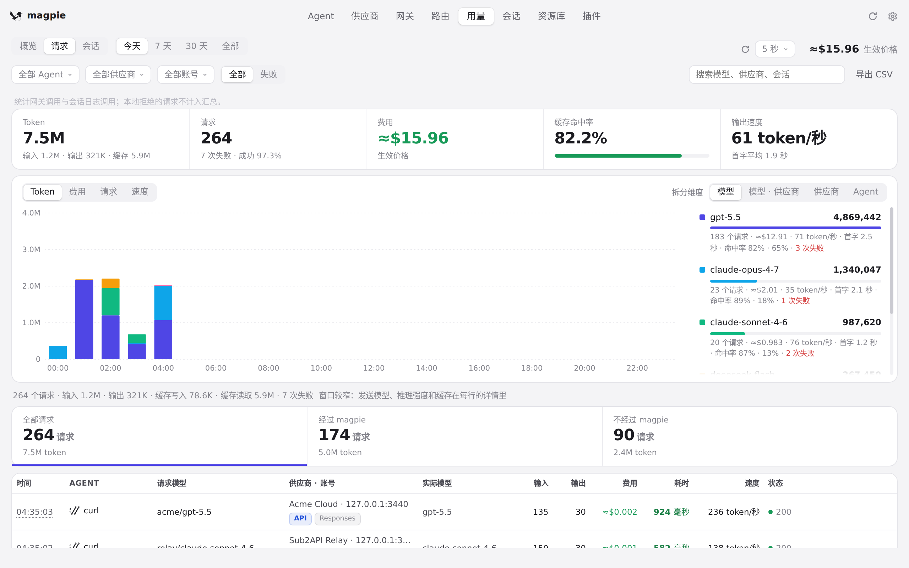
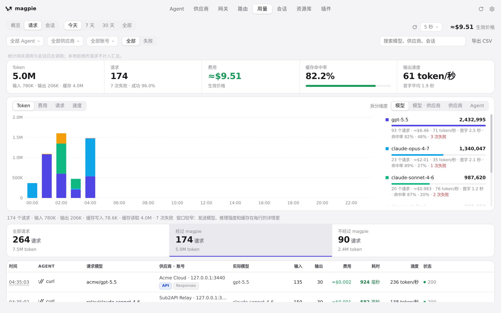
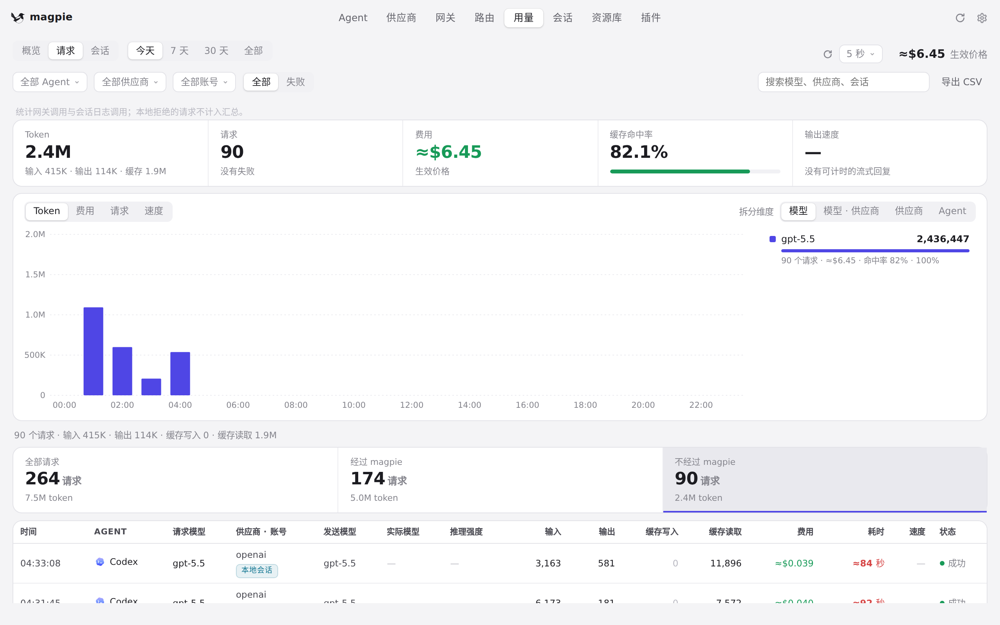
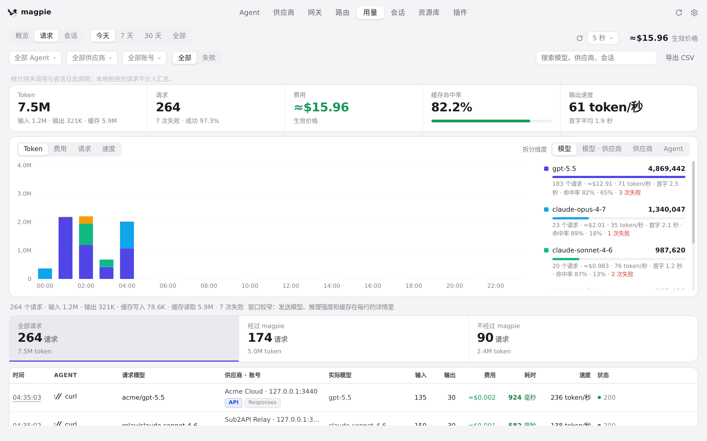
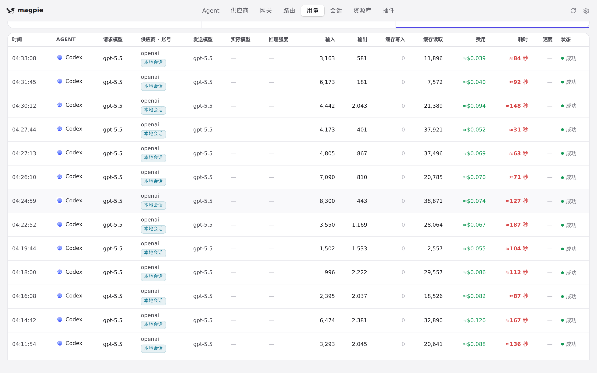

#948 界面预览
commit 3e8c70c · 回到 PR · 请求页（用量 › 请求）在汇总下面新增一排可点击的来源方块：「全部请求 / 经过 magpie / 不经过 magpie」，点击即按来源筛选并带 aria-pressed，URL 支持 ?via=；来自会话文件的行在「供应商·账号」列会显示文件里记下的供应商 id（有账号时账号优先），对应角标的提示也区分「文件记的供应商」与「只认得出账号」。
红线是鼠标走过的轨迹，红色圆环是一次点击；底部文字是这一步在做什么。空格暂停，← → 逐段查看。

请求页的三个来源方块与筛选 · 请求列表上方新增的三个来源方块，当前是「全部请求」

请求页的三个来源方块与筛选 · 点击「经过 magpie」后的请求页

请求页的三个来源方块与筛选 · 点击「不经过 magpie」后的请求页

请求页的三个来源方块与筛选 · 回到「全部请求」后的请求页

会话文件读来的行在供应商列显示什么 · 不经过 magpie 的列表：供应商·账号列与会话角标